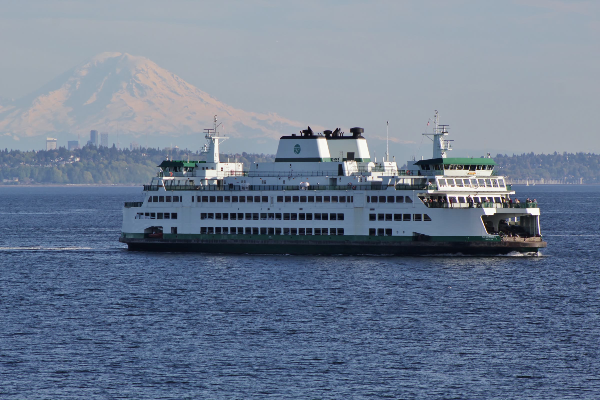

Players · Adult Line
Pick a line. We’ll draw the team.
Hat league on Mondays, Sea Plastic on the sand, Potlatch in July — one line, rec to competitive. Tell us the season; we’ll show you where you board.
DiscNW · Design direction 14 of 19
Every player has a route into ultimate — the site is the transit map that shows yours. Four color-coded lines turn DiscNW’s dozens of programs into one legible system: real programs as stations, the big tournaments as interchanges, and signage that always tells you what’s next.
02 — The idea
The current discnw.org is a capable league-management database with a front door problem: a brand-new parent and a twenty-season captain get the same wall of links, and both have to already know what they’re looking for. The honest diagnosis isn’t “too many programs” — it’s no map.
Transit systems solved exactly this. In 1933, London’s tangle of tracks became legible overnight — not with more detail, but with less: colored lines, evenly spaced stations, interchange rings where routes actually meet. The Route Map applies that discipline to DiscNW. Four lines cover everything the organization runs, every program becomes a station with an address, and no program is a dead-end link anymore — camps sit on a line that runs through Wonder League to Spring Reign and onward. The site stops describing the system and starts being it.
03 — Color
Ink and warm white do the everyday work; four transit-grade line colors do the pointing. Every line color passes AA against white — they’re information, so they are never allowed to be too pretty to read. Photography keeps its own color.
Station boards, navs, and headline ink — the near-black of enamel signage.
The map sheet — page grounds and cards, warm rather than clinical.
Camps (7–18) → Wonder League → Spring Reign. Also the system’s “go”: primary buttons.
Fall middle school → high school leagues — the season-ticket orange.
Hat league → Sea Plastic → Potlatch. Brightened straight from DiscNW’s heritage navy.
Volunteer → Coaching Collective → community — the line that staffs all the others.
Supporting derivations: Platform Grey #55606B for metadata and captions; a 10% tint of each line color for chips and panels. On ink surfaces the lines switch to their backlit variants so small labels keep AA contrast.
04 — Typography
Overpass descends directly from Highway Gothic, the face on every U.S. road sign since the 1940s — its wayfinding credentials are provenance, not mood. Inter carries the reading; Overpass Mono keeps the timetables honest.
Born from Highway Gothic, the U.S. interstate lettering. Set big, uppercase, tight-tracked — station-sign confidence at every size. Weights 700–900.
The proven workhorse for rosters, waivers, and registration flows. Weights 400–700, comfortable at schedule-table sizes.
Same family, fixed pitch — departure times, station codes, fare tables, and service notices line up like they should.
Next stop: your first pull.
Four lines. Dozens of programs. One map — and you’re already on it.
Every route in the system is run by the people riding it: 10,000+ players a year, zero referees, every call made on the field. The signage speaks the way good signage does — calmly, briefly, and always about what happens next.
Magnuson Park
A ADULT LINE · MONDAYS · SERVICE UNTIL SUNSET — 9:00+ PM IN JUNE, 4:20 PM IN DECEMBER
Where are you going?
Display · Overpass 900 caps · 56–112pxThree front doors
H2 · Overpass 800 · 40/44Summer Wonder League
H3 · Overpass 700 · 23/29Individual signup — we draw balanced teams, and you’ll know everyone’s name by week two.
Body · Inter 400 · 17/27Y1 · Summer Youth Ultimate Camps · weekly
Timetable · Overpass Mono 600 · 12.5/1605 — Signature element
The whole organization on one sheet, drawn with a real transit diagram’s discipline: one line weight, one station-dot size, rounded right angles, interchange rings only where lines truly meet. It isn’t an illustration of the region — it’s a diagram of the community.
System page hero·Program headers — one line, enlarged·Confirmations — your stop, circled·Season recaps — the route you rode
Motion rule: the four lines pull out of the origin on the draw curve (stroke-dashoffset, 150ms apart), stations pop in travel order, labels post last, and YOU ARE HERE pulses exactly once. Then the map holds still — because maps hold still. A 2.4s failsafe lands everything regardless.
06 — Homepage
The hero is a departure board, not a poster: four huge tappable line rows, each with its next departure. Field status reads as service status, photography arrives as the destination, and the whole board boots like a platform sign coming online at 5:55 on a league night.
GOOD SERVICE · ALL LINESMAGNUSON — OPEN · MARYMOOR — OPEN · WIND 8 MPH SWRAINOUT HOTLINE (206) 781-5840
Ultimate across Puget Sound · Seattle 501(c)(3) · est. 1995
Where areyou going?
10,000+ players a year ride four lines to the same place — a field, a disc, and a game you call yourselves. Pick a line; the map handles the rest.
Departures● All lines runningUpdated 5:55 PM
Youth Line Camps (ages 7–18) → Summer Wonder League → Spring Reign Next departure Summer camps · weekly thru Aug 21 School Line Middle school → high school leagues, every fall Next departure Fall MS League · rosters open Aug 18 Adult Line Hat league → Sea Plastic → Potlatch Next departure Summer Mixed Hat — starts July 12 Spirit Line Volunteer → Coaching Collective → every field in the system Next departure Coaching clinic · Sat Jul 26
Now arriving · Spring Reign — Burlington
The Youth and School lines meet here.
Component note: the service strip is real utility — DiscNW already runs a rainout hotline, and “good service, all lines” is the honest Seattle default: about 37 inches of rain a year falls on roughly 150 days, and drizzle rarely cancels ultimate. Rows light on hover like backlit signs; the register plate leans up to 6px toward the cursor on fine pointers only.
07 — Audience pathways
Players, coaches, parents — each door is color-coded to the line they’ll actually ride, labeled in their own language, three seconds after the page loads.
Players · Adult Line
Hat league on Mondays, Sea Plastic on the sand, Potlatch in July — one line, rec to competitive. Tell us the season; we’ll show you where you board.

Coaches & volunteers · Spirit Line
Start at scorekeeping or field setup, transfer to the DiscNW Coaching Collective — trainings, practice plans, and a bench of experienced coaches behind you the whole route.

Parents & families · Youth Line
Camps at seven, Wonder League at ten, Spring Reign before high school. There are no referees anywhere on the line — players make their own calls, and they learn why that matters.

Elliott Bay, one ferry, one mountain — this region already thinks in routes and crossings. We’re just adding four lines to the map it carries in its head.
08 — Storytelling
Every rider’s history is a route, so the story unit prints it like one: a voice up top, the actual stations underneath. The archive slowly becomes a map of how people move through this community.

“We boarded the Youth Line when my daughter was nine. Somewhere around her third Spring Reign I stopped watching from the sideline and started running the scoreboard, then the warm-ups. Last fall the Coaching Collective handed me a practice plan and fourteen seventh-graders. Same fields, different line — and I still can’t throw a forehand in wind.”
riders a year — third-grade campers to masters hat leaguers, on the same system.
referees, anywhere on the map. Players make their own calls — Spirit of the Game is how the whole system runs.
the lowest fare — sliding scale, no questions asked. Every tier rides the same season.
first service — founded at Potlatch, the interchange the Adult and Spirit lines still share.
Component note: transfer stories are 400–600 words plus one photo and one route strip, submitted through a story form — a sustainable pipeline, not a staff burden. The route strip is generated from real registration history, which is the quiet magic: the org already has everyone’s map.
09 — UI components
Registration is the site’s day job, so the components read like a timetable: Youth-green means go, ink means information, and the mono face keeps every date and fare lined up.
Keyboard focus draws a 3px Adult-blue ring (backlit blue on ink). The magnetic lean is pointer-only — touch and reduced-motion get the plain plate.
Individual signup — we draw balanced teams from the hat. You’ll know everyone’s name by week two. Continues toward Sea Plastic and Potlatch.
Fare: $33–$495 sliding scale — pick the tier that fits your household, no questions asked. Every tier rides the same season.
The result renders as a route — your line, your next three stations — not another list of links.
10 — Voice & tone
Good signage voice: calm, brief, always about what happens next — with a conductor’s warmth underneath. It never sounds like league-management software, and it never wastes a rider’s time.
Where are you going?
You’re aboard — Summer Mixed Hat League, departing July 12 at Magnuson Park. Fourteen teammates board with you; your schedule is posted under your name. Bring cleats and a rain shell. Service runs in drizzle.
SERVICE NOTICE · SAT · Rain, the usual kind — Seattle’s 37 inches a year is less than New York gets, just spread across 150 days. All lines running. Watch the wind on the pull, not the sky. Real cancellations only: (206) 781-5840.